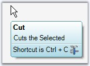
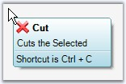
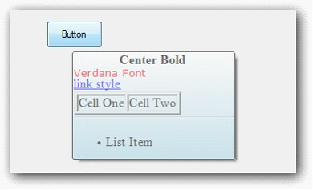

This section discusses the customization properties for the ToolTipItems.
 Note: All these properties are applicable
to all the three ToolTipItems.
Note: All these properties are applicable
to all the three ToolTipItems.
Image Settings
|
Property |
Description |
|
Image |
Sets the image to be shown on the Tooltip. |
|
ImageAlign |
Indicates the alignment of the image. |
|
ImageScalingSize |
Sets the size of the image. |
|
ImageTransparentColor |
Sets the transparent color for the image. |
Images can be associated with the header, body and footer of the super tooltip using this property.
|
[C#]
toolTipInfo1.Footer.Image = ((System.Drawing.Image)(resources.GetObject("resource.Image"))); toolTipInfo1.Footer.ImageAlign = System.Drawing.ContentAlignment.MiddleCenter; toolTipInfo1.Footer.ImageScalingSize = new System.Drawing.Size(16, 16); |
|
[VB.NET]
toolTipInfo1.Footer.Image = DirectCast((resources.GetObject("resource.Image")), System.Drawing.Image) toolTipInfo1.Footer.ImageAlign = System.Drawing.ContentAlignment.MiddleCenter toolTipInfo1.Footer.ImageScalingSize = New System.Drawing.Size(16, 16) |

Figure 1450: Image Set for Footer
|
Property |
Description |
|
Font |
Sets the FontStyle for the item's text. |
|
ForeColor |
Sets the ForeColor for the item's text. |
|
[C#]
toolTipInfo1.Header.Font = new System.Drawing.Font("Microsoft Sans Serif", 8.25F, System.Drawing.FontStyle.Bold); toolTipInfo1.Header.ForeColor = System.Drawing.Color.Black; |
|
[VB.NET]
toolTipInfo1.Header.Font = New System.Drawing.Font("Microsoft Sans Serif", 8.25F, System.Drawing.FontStyle.Bold) toolTipInfo1.Header.ForeColor = System.Drawing.Color.Black |
|
Property |
Description |
|
Hidden |
Shows or hides a tooltip item. Default is false. |
|
Text |
Sets the text to be displayed in the ToolTip Item. Its supports multiline text also. |
|
TextAlign |
Indicates the alignment of the tooltip text. |
|
TextImageRelation |
Sets the location of the text in relation to the image. The options are,
· ImageBeforeText and · TextBeforeImage. |
|
TextMargin |
Sets the text margin for the Tooltip item. |
|
[C#]
toolTipInfo1.Header.Hidden = true; toolTipInfo1.Header.Text = "Cut"; toolTipInfo1.Header.TextAlign = System.Drawing.ContentAlignment.MiddleLeft; toolTipInfo1.Header.TextImageRelation = Syncfusion.Windows.Forms.Tools.ToolTipTextImageRelation.ImageBeforeText; toolTipInfo1.Header.TextMargin = new System.Windows.Forms.Padding(1, 1, 1, 1); |
|
[VB.NET]
toolTipInfo1.Header.Hidden = True toolTipInfo1.Header.Text = "Cut" toolTipInfo1.Header.TextAlign = System.Drawing.ContentAlignment.MiddleLeft toolTipInfo1.Header.TextImageRelation = Syncfusion.Windows.Forms.Tools.ToolTipTextImageRelation.ImageBeforeText toolTipInfo1.Header.TextMargin = New System.Windows.Forms.Padding(1, 1, 1, 1) |

Figure 1451: Header ToolTipItem with Customized Appearance and Text Settings
Note: A SuperToolTip (Body, Header and
Footer) can be hidden by calling the SuperToolTip.Hide() method.
Adding RenderHtml and Size Property to the SuperToolTip.
Text given in the Text property will be considered as HTML strings and displayed as HTML, when the RenderHtml property is set to true.
Size property sets the size of header, body and footer Item. Size property will be enabled when the RenderHtml is set to true.
CSS properties and all the text formatting HTML tags are supported.

Figure 1452: Tooltip
The following code illustrates setting RenderHtml, Text, Size properties.
|
toolTipInfo2.Footer.Size = new System.Drawing.Size(200, 50); toolTipInfo2.Footer.RenderHtml = true; toolTipInfo2.Footer.Text = "<ul><li>List Item</li></ul>"; |
|
[VB .Net]
Me. toolTipInfo2.Footer.Size= New System.Drawing.Size(200,50) Me.toolTipInfo2.Footer.RenderHtml = true Me.toolTipInfo2.Footer.Text = "<ul><li>List Item</li></ul>" |